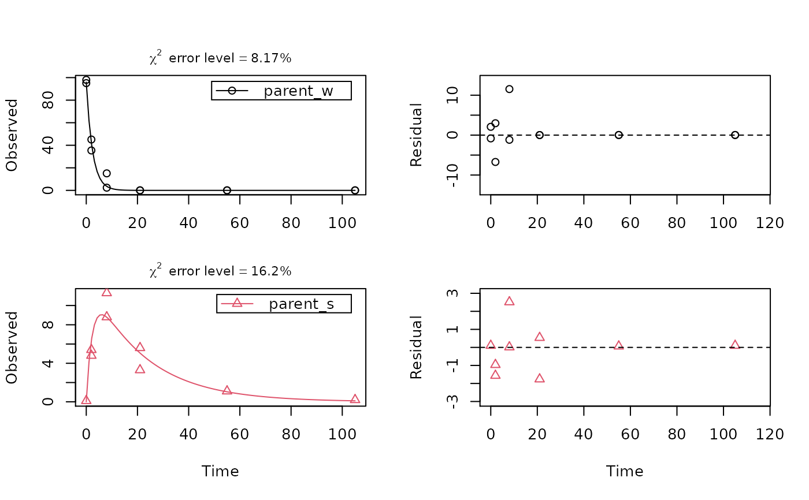
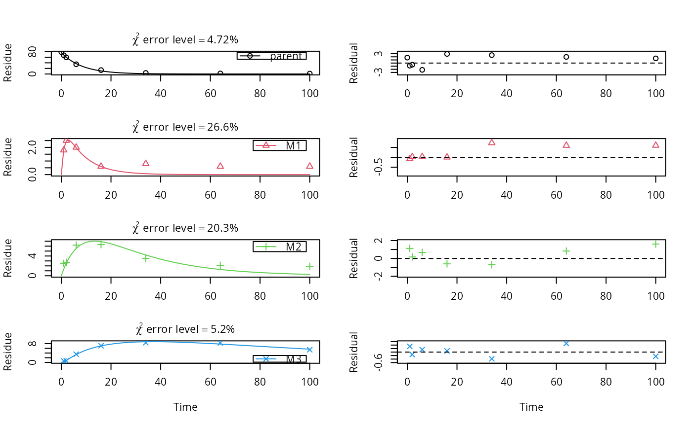

test_data_from_UBA_2014.RdThe datasets were used for the comparative validation of several kinetic evaluation software packages (Ranke, 2014).
test_data_from_UBA_2014
A list containing three datasets as an R6 class defined by mkinds.
Each dataset has, among others, the following components
titleThe name of the dataset, e.g. UBA_2014_WS_river
dataA data frame with the data in the form expected by mkinfit
Ranke (2014) Prüfung und Validierung von Modellierungssoftware als Alternative zu ModelMaker 4.0, Umweltbundesamt Projektnummer 27452
# \dontrun{ # This is a level P-II evaluation of the dataset according to the FOCUS kinetics # guidance. Due to the strong correlation of the parameter estimates, the # covariance matrix is not returned. Note that level P-II evaluations are # generally considered deprecated due to the frequent occurrence of such # large parameter correlations, among other reasons (e.g. the adequacy of the # model). m_ws <- mkinmod(parent_w = mkinsub("SFO", "parent_s"), parent_s = mkinsub("SFO", "parent_w"))#>#> Warning: Observations with value of zero were removed from the data#> Warning: Could not calculate correlation; no covariance matrix#> Estimate se_notrans t value Pr(>t) Lower Upper #> parent_w_0 95.91998118 NA NA NA NA NA #> k_parent_w 0.41145375 NA NA NA NA NA #> k_parent_s 0.04663944 NA NA NA NA NA #> f_parent_w_to_parent_s 0.12467894 NA NA NA NA NA #> f_parent_s_to_parent_w 0.50000000 NA NA NA NA NA #> sigma 3.13612618 NA NA NA NA NA#> err.min n.optim df #> All data 0.1090929 5 6 #> parent_w 0.0817436 3 3 #> parent_s 0.1619965 2 3# This is the evaluation used for the validation of software packages # in the expertise from 2014 m_soil <- mkinmod(parent = mkinsub("SFO", c("M1", "M2")), M1 = mkinsub("SFO", "M3"), M2 = mkinsub("SFO", "M3"), M3 = mkinsub("SFO"), use_of_ff = "max")#>#> Warning: Observations with value of zero were removed from the data#> Estimate se_notrans t value Pr(>t) Lower #> parent_0 76.55425649 0.859186399 89.1008710 1.113861e-26 74.755959406 #> k_parent 0.12081956 0.004601918 26.2541722 1.077359e-16 0.111561575 #> k_M1 0.84258614 0.806159820 1.0451850 1.545267e-01 0.113779670 #> k_M2 0.04210880 0.017083035 2.4649483 1.170188e-02 0.018013857 #> k_M3 0.01122918 0.007245855 1.5497385 6.885052e-02 0.002909431 #> f_parent_to_M1 0.32240200 0.240783909 1.3389682 9.819073e-02 NA #> f_parent_to_M2 0.16099855 0.033691953 4.7785463 6.531137e-05 NA #> f_M1_to_M3 0.27921507 0.269423745 1.0363417 1.565266e-01 0.022978220 #> f_M2_to_M3 0.55641253 0.595119954 0.9349586 1.807707e-01 0.008002509 #> sigma 1.14005399 0.149696423 7.6157731 1.727024e-07 0.826735778 #> Upper #> parent_0 78.35255357 #> k_parent 0.13084582 #> k_M1 6.23970352 #> k_M2 0.09843260 #> k_M3 0.04333992 #> f_parent_to_M1 NA #> f_parent_to_M2 NA #> f_M1_to_M3 0.86450768 #> f_M2_to_M3 0.99489895 #> sigma 1.45337221#> err.min n.optim df #> All data 0.09649963 9 20 #> parent 0.04721283 2 6 #> M1 0.26551208 2 5 #> M2 0.20327575 2 5 #> M3 0.05196550 3 4# }